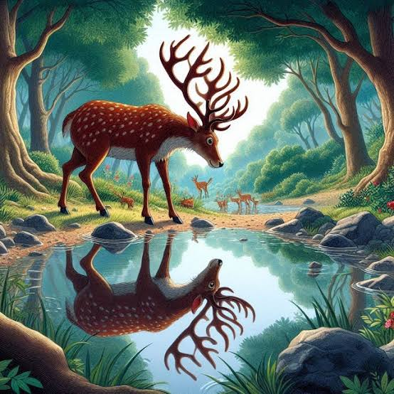

Beauty is not as important as usefulness.

Once upon a time, a beautiful stag lived in a large green forest. Every morning he visited a clear pond to drink water. One day he looked at his reflection and proudly admired his large, beautiful antlers. "My antlers are so wonderful," he said. "They make me look like the king of the forest." Then he looked at his thin legs and became unhappy. "How ugly my legs are! I wish they were as beautiful as my antlers." Suddenly, he heard the loud barking of hunting dogs. The frightened stag immediately began running. His thin legs carried him swiftly across fields, rocks, and bushes. Soon he had left the dogs far behind. As he entered a thick forest, his beautiful antlers became tangled in the branches of a tree. He struggled with all his strength but could not free himself. The hunting dogs quickly caught up. The stag cried, "How foolish I have been! The legs that I hated tried to save my life, while the antlers I admired have trapped me." With one final effort, he broke free and escaped into the forest. From that day onward, he never judged anything by its appearance alone. He learned that usefulness is much more valuable than beauty.
Do not judge things by their appearance. True value lies in usefulness, not beauty.